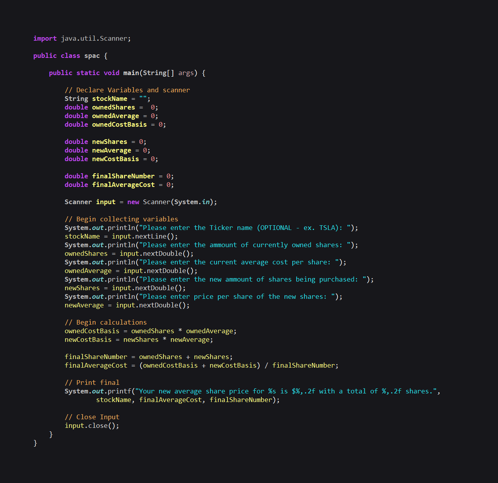
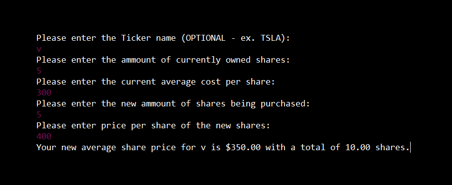

Our project is a website-based calculator that allows a user to plan purchases of stocks using a mix of
live data and user input. There are login/account management features, multiple API's in use, and
crypto tickers to accompany the calculator.
The idea for this project arose from a previous project that was built in Java. This previous project
collected all inputs manually to provide calculations similar to our project. We wanted a better user experience
to make the application feel modern and streamlined. This led us to have a goal for a calculator that can take user
input and combine it with live data to provide much more convenient results and calculations.
Old Project Code

Old Project Output

The project scope was roughly determined by looking at the due dates of the revised project outline given to us as
well as what we could achieve within the limits of our programming skillset. We were aware of our capabilities from the beginning of the project
since we are both relatively new to web and
software development where skills acquired from multiple courses needed to be utilized.
Planning became easier once we built the calculator and gave it the basic functionality needed to produce the desired output. We were then able to
decide which additional features could or needed to be added to create a better user experience and the time that it would
take to do so since we have had to work on additional projects in our other classes.
We started work on the calculator and assured that it functioned properly before moving forward with the rest of the
site. From there, we looked at the idea of allowing a user profile to be included if the user decided to create an account.
This has been the most difficult part to give proper functionality to however. In the meantime, we have created a login page
that allows the user to continue as a guest where they are then taken to the website's homepage. At the home page, the user has the ability to create
an account or use the calculator.
For the UI, we decided to use darker colors to enhance the features and give the user an aesthetically pleasing viewing
experience when using the site. It is mostly made of dark blue and gray colors, specifically in the background, crypto ticks, and
nav bar, and uses occasional bright colors for the tables and dropdown lists to balance out the pages.
In addition to creating a better viewing experience, we also took the website's usability into account when accessing
certain features or pages. Since the site is limited on features, most of them can be accessed within 1-2 clicks to
avoid confusing the user or making navigation within the site difficult.